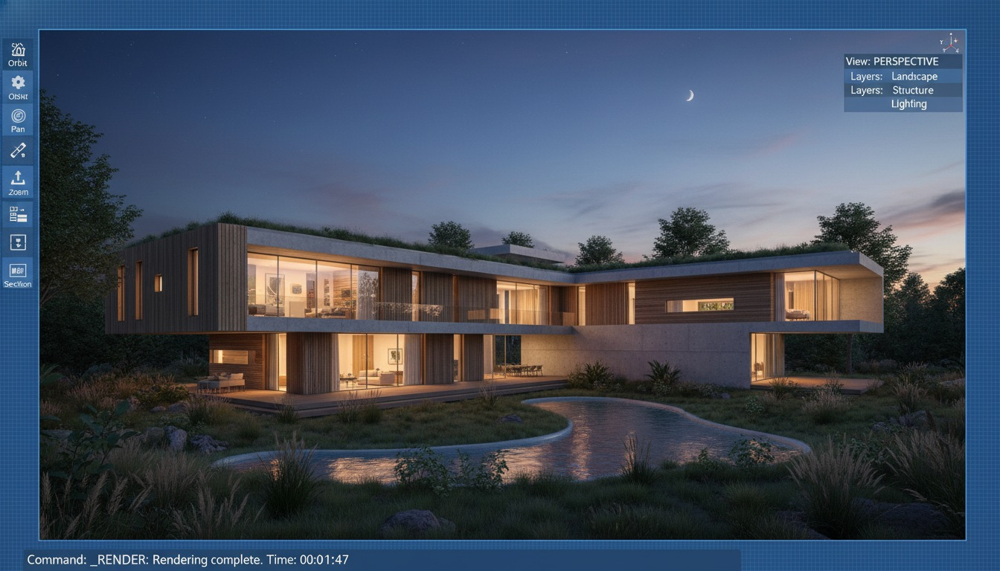

There's a line doing the rounds in the architecture-tool blogs this month, and it's worth taking seriously: architects are drifting away from Midjourney, and the reason isn't image quality. A Rendair piece on Midjourney alternatives put it bluntly — the Discord-based interface and the limited control over a specific design are pushing architects toward BIM-integrated tools instead, with Veras singled out for integrating across roughly seven CAD and BIM platforms. Strip away the vendor framing and there's a real pattern underneath, one we've watched play out in our own studio over the last year.
The shift is easy to misread as "Midjourney got worse." It didn't. Midjourney V8 still produces some of the most arresting architectural imagery you can generate from a sentence. What changed is what architects are asking the render to do. A year ago the demand was atmosphere — give me a feeling, a mood, a competition cover. Increasingly the demand is fidelity — render this scheme, the one I've already modelled, without quietly redesigning it. And that's a job a tool living outside your model simply can't do well.
The round-trip is the whole problem
Think about what it actually takes to render a real project in Midjourney. You've drawn the building. Now you leave your modelling software, open Discord, and try to describe in words a thing you have already described precisely in geometry. The massing, the fenestration rhythm, the way the roof meets the parapet — all of it has to be re-encoded as prose, and the model will honour roughly none of it. You get back something beautiful and adjacent, a building that rhymes with yours but isn't it. For a mood board, adjacent is fine. For design development, adjacent is a liability, because the client remembers the render and not the caveat.
A model-integrated renderer collapses that round-trip. It reads your live view — your actual geometry, your camera, your openings — and generates from that. The proportions hold because they were never re-described; they were inherited. Change a window in the model and the next render reflects it. That single property, the render staying tied to the design, is the thing pulling work away from standalone generators, and it's why the integration list matters more than the leaderboard of who makes the prettiest pixel.
Midjourney draws a beautiful building. The integrated tools draw your building. As the work moves downstream, that difference stops being cosmetic.
What "integrated" actually buys you
"Integration" gets used loosely, so it's worth being precise about the gradient, because not all of it is equal. There's a real difference between a tool that reads your geometry and one that just opens a browser tab next to it.
Native tools run inside the host as a first-party feature (SketchUp Diffusion is the cleanest example — it generates from your SketchUp view without ever leaving the application). Plugin tools install into the host and read its live geometry (Veras across Revit, SketchUp, Rhino, Archicad and more; Enscape and D5 bridging real-time scenes into AI enhancement). Round-trip tools — including Midjourney and most web generators — take an exported image or a text prompt and have no awareness of your model at all. The first two preserve the design; the third re-imagines it.
The practical payoff of staying in the first two tiers is mostly invisible until you've lost it. You keep your scene state. You iterate at the speed of a model tweak rather than a re-prompt. You can hand a junior the same view and get a consistent result. And critically, the render survives a design review, because when the client points at the third window and asks to see it taller, you change the model and re-render the actual change — you don't go back to Discord and gamble on an adjective.
Where the market is actually moving
You can read the direction of travel in what the big vendors are shipping. Chaos has spent 2026 tightening Veras into the rest of its stack — surfacing it inside Enscape, pushing AI features across Enscape, Vantage and V-Ray together — so the generative step lives next to the real-time and production engines instead of in a separate app. SketchUp made diffusion a native menu item rather than a third-party errand. D5 keeps folding AI relight and generative assets into a real-time pipeline that starts from your scene. None of these companies is chasing "better than Midjourney on a single hero shot." They're all chasing the same thing: keep the architect inside the model and bring the AI to the geometry, not the other way around.
That's the tell. When every serious vendor independently bets on integration over standalone polish, they're reading the same demand we are — that the centre of gravity for AI rendering has moved from the concept image to the working drawing-set companion, and the tools that sit closest to the model win the recurring use.
Where Midjourney still wins outright
Here's the honest counterweight, because the integration story gets oversold too. There is a phase of every project where you have no geometry worth rendering, and that phase belongs to Midjourney. Early atmosphere, material language, a competition image that needs to sell a feeling rather than prove a plan, reference imagery to align a team before anyone opens Revit — this is where being unconstrained by a model is the feature, not the bug. Midjourney's out-of-the-box polish, its handling of light and mood, its sheer range of look, are still ahead of what a geometry-locked tool will give you, precisely because it isn't tethered to your massing.
So the framing of "leaving Midjourney" is too clean. What's actually happening is that Midjourney is being pushed up the timeline, not out of it. It's becoming an upstream tool — for feeling and exploration before commitment — while the integrated renderers take over the moment the design has to be honoured. Architects aren't dropping the generator; they're demoting it to the stage where its weakness doesn't matter.
| The job | Standalone generator (Midjourney) | Model-integrated renderer (Veras / SketchUp Diffusion / D5) |
|---|---|---|
| Early mood & atmosphere | Wins — unconstrained, highly polished | Overkill before geometry exists |
| Rendering a specific design | Re-imagines it — fidelity not guaranteed | Wins — reads your actual geometry |
| Iterating after a design change | Re-prompt and gamble | Change model, re-render the real change |
| Consistency across a team | Prompt-dependent, drifts | Anchored to the shared model |
| Competition / cover imagery | Wins — range and look out of the box | Capable but more constrained |
Our take: integration is a workflow argument, not an image argument
The mistake we see architects make is comparing these tools on output quality, side by side, hero shot against hero shot. On that axis Midjourney often wins, and the comparison tells you almost nothing useful, because output quality was never the reason the work moved. The reason is workflow economics. A render that's born inside your model costs you nothing to keep in sync with the design; a render that lives outside it costs you a re-description every single time the design moves — and projects move constantly. Multiply that friction across a real job and the integrated tool wins on total effort even when it loses on any single frame.
That's also the lens we'd apply to the "seven platforms" marketing. The number itself is a vendor talking point — what actually matters is whether the integration reads your geometry or just bolts a panel onto the host. Depth of integration beats breadth of logos. A tool that's genuinely native in the one host you live in will serve you better than one that lists ten hosts and reads the model shallowly in all of them. Before you switch, test the integration on a real view from your actual project, not a demo scene, and watch specifically for whether your geometry survives the render unchanged.
If you're rethinking your render stack this week
Run one honest experiment. Take a project you've already modelled and render the same view three ways: in Midjourney from a text description, in a plugin renderer like Veras reading your live geometry, and natively if your host supports it. Don't judge them on which looks prettiest. Judge them on which one you'd be willing to put in front of the client and then change when they ask for a taller window. That test tells you where each tool belongs in your pipeline far better than any roundup — and it usually ends with Midjourney upstream for mood and an integrated tool doing the work that has to stay true to the drawing.
We test these tools on live project work and publish the version with the friction left in. Join the studio newsletter for weekly field notes, or read our breakdown of AI-native versus plugin renderers and why SketchUp making diffusion native is part of the same shift.
Framing drawn from industry coverage of Midjourney alternatives and BIM-integrated rendering, including Rendair's published comparison, alongside Vista Studios' own experience running these tools on live projects. Platform and integration claims reflect vendor materials current at publication; verify exact host support in your build before switching. No affiliate relationship with any tool named.